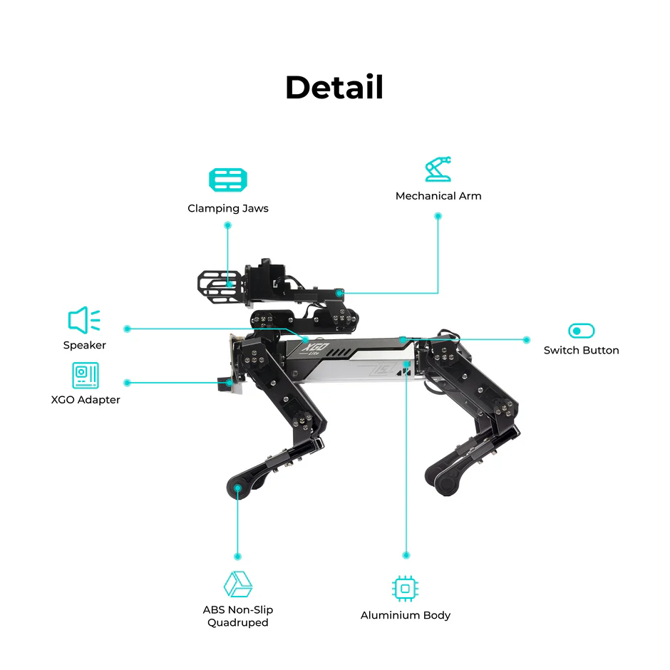
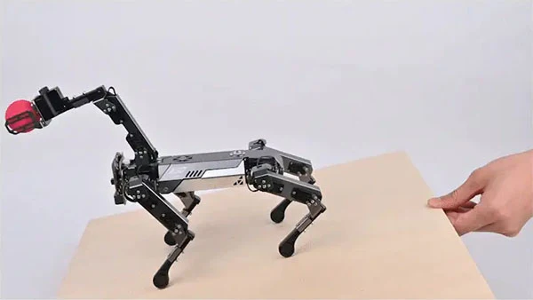
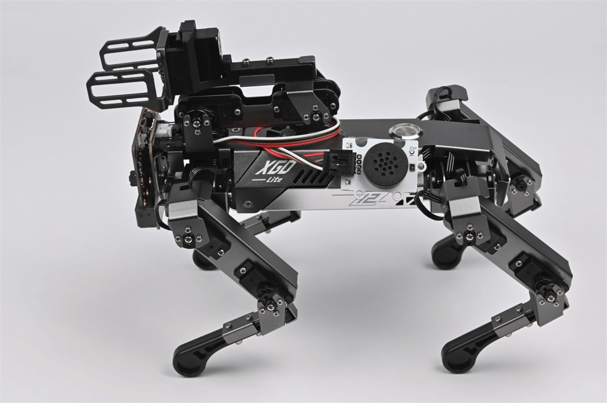
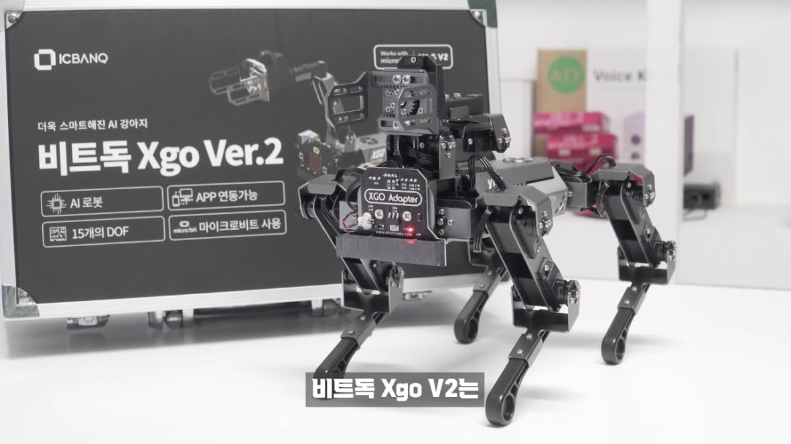
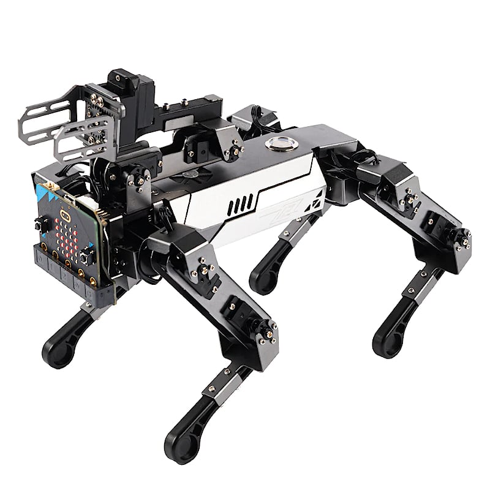
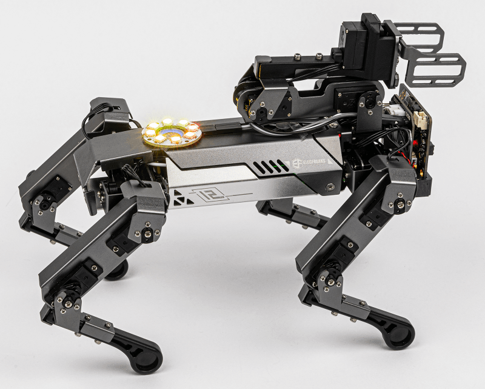

Offline Website Builder
Stabilitásérzékelő / IMU (gyorsulásmérő + giroszkóp)
Mérni tudja a robot helyzetét, dőlését, elfordulását.
Segít a stabil járásban, lábmozgások koordinálásában.
Lehetővé teszi az önkorrekciós mozgást, hogy a robot ne essen el, még ha lejtőn mozog vagy akadályba ütközik.
Távolságérzékelő (Infra/Ultrahang) - Érzékeli az akadályokat a robot előtt.
Lehetővé teszi akadálykerülő programok készítését.
Programozható, hogy ha akadályt érzékel, megálljon, megforduljon vagy másik útvonalat válasszon.
Érintés / bumper szenzor - Bizonyos XGO V2 konfigurációkban van ütközésérzékelő a robot alján vagy lábain.
Segíti a visszajelzés alapú interakciókat: pl. ha a robot beleütközik egy tárgyba, automatikusan visszafordul.
Lábmozgás / motorpozíció érzékelő - Minden láb motorjához tartozik fordulatszám- és pozícióérzékelő, ami pontos járást tesz lehetővé.
Lehetővé teszi a koordinált lépések programozását, pl. sétálás, fordulás, guggolás.
Hang- és fényérzékelés (opcionális modulok) - Kiegészítő szenzorok csatlakoztathatók (pl. LED, mikrofon).
Alkalmas interaktív játékokra vagy AI-projektekhez: pl. a robot reagálhat hangutasításokra, fényforrásokra.
4 láb, több szabadsági fok, kombinált lépések és fordulások.
Motorvezérlés minden lábon, precíz mozgás.
Micro:bit vagy Arduino alapú vezérlés.
Motorvezérlő modulok minden lábon.
Vizuális blokkok vagy python a vezérlőtől függően.
Szenzorok és motorok kombinált vezérlése
További szenzorok, LED-ek, hangmodulok csatlakoztathatók.
AI vagy interaktív programok készítése, több XGO robot koordinálása.

Négylábú robot működésének megértése.
Lábmozgások, stabilitás, érzékelő-alapú navigáció.
Programozás python vagy vizuális blokkokkal.

Gesztusvezérlés, mozgásérzékelés, interakciók.
Szenzorvezérelt robotikus feladatok gyakorlása.

Interaktív robotkutya viselkedésének kialakítása.
Mozgásprogramozás, hang- és fényreakciók.
Kísérleti mozgásminták, autonóm feladatok.

Kihívások: akadályok leküzdése, célkeresés, autonóm navigáció.
Csapatmunka fejlesztése: stratégia, hibakeresés, feladatmegosztás.

Egyetemi vagy hobbiprojektek: AI integráció, érzékelő-adatok feldolgozása, mozgásoptimalizálás.
Prototípus készítés: robotkutya funkciók bővítése új szenzorokkal.
Offline Website Builder